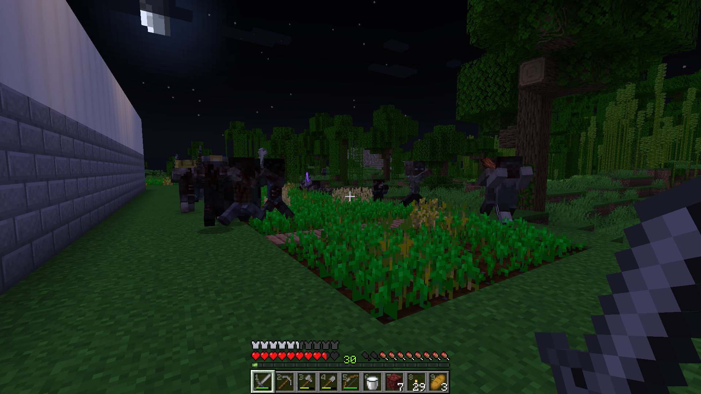
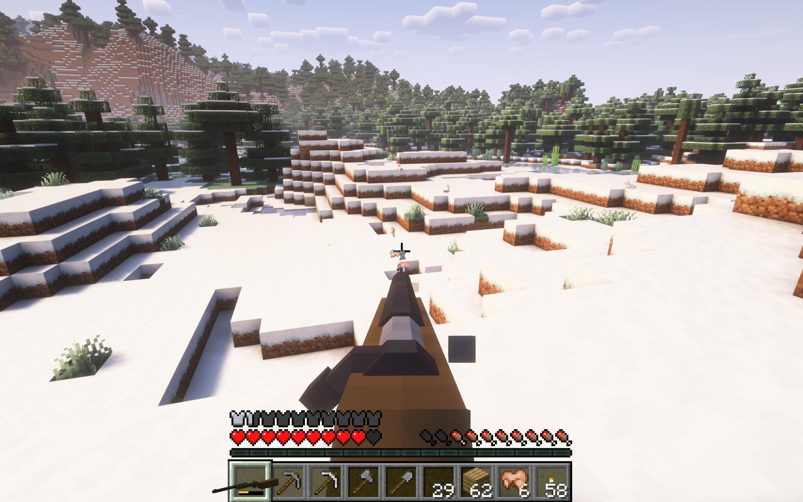

Custom progression
One of the main aspects of this server is its custom progression, which allows you to progress through the game in an entirely unique way, which is somewhat more realistic (and difficult) than vanilla. Read more here.
Home ⋅ Custom Progression ⋅ Zombies ⋅ Equipment ⋅ Lore
The Horde is a modded Minecraft zombie apocalypse server designed to be compatible with vanilla clients, but still offering a very modded and nonvanilla experience. Despite the server's goal of being joinable and playable with vanilla clients, the best experience on the server is achieved with the modpack. While not necessary to join or participate in The Horde, it does allow for voice chat, drastically visually improved zombies, and other features. The server does have lore, which you can interact with a lot or not. More information can be found in the lore page linked at the bottom of the page.
One of the main aspects of this server is its custom progression, which allows you to progress through the game in an entirely unique way, which is somewhat more realistic (and difficult) than vanilla. Read more here.

The central identity of any "Zombie Apocalypse" is, of course, the zombies, and the horde does not disappoint. There are 9 types of zombies, which you can read more about at this page(also linked above).

You're far from helpless against these zombies, however, as there are a number of new additions to your arsenal, most notably firearms, but also including explosives and medical equipment, all of which you can read about here.
The wheel keeps turning. Details change, everything and everyone changes, but one thing stays constant. Can you guess what it is? -The Merchant